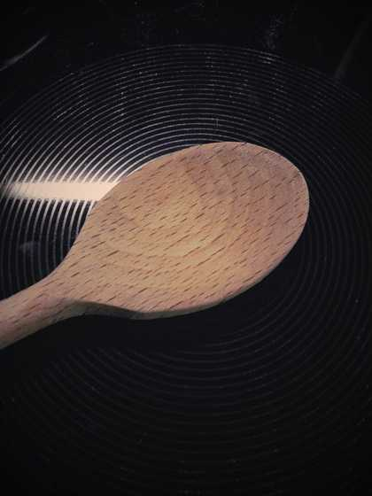
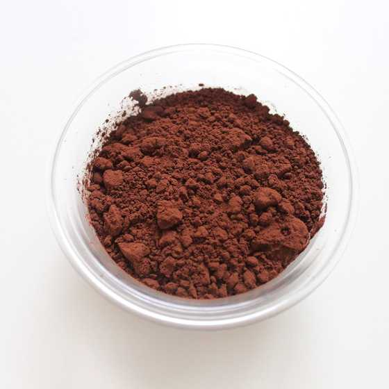
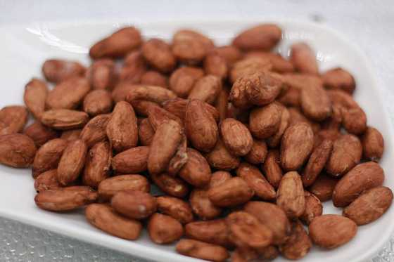
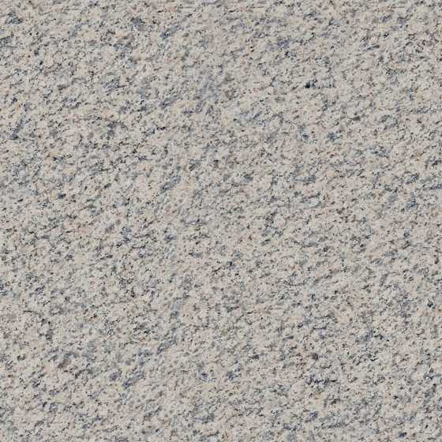

ABOUT
鳥の名前に、50歳からの思いを
「ゴジュウカラ」は、日本各地の落葉広葉樹林にすむ小鳥の名前です。取材記事によると、多くの鳥が大空を舞うように、50歳から第二の人生を始めたいという思いを込めた屋号だそうです。
お店は、店主の姉妹が営む古民家の喫茶。店内には、店主のご両親が営んでいた喫茶店の看板や食器が引き継がれていると紹介されています。大切にしたいのは「居心地の良さ」と「笑顔に会える場所」。
- 2024年5月30日オープン
- 大津駅から琵琶湖方面へ歩いた路地の奥にある古民家
- 加工品をなるべく使わない手作り(取材記事より)
上記は2024年の取材記事などによる情報です。現在の内容はInstagramでご確認ください。

白い石の天板に置かれたコーヒー 
手作りおやつのイメージ 
朝のパンのイメージ 
焼きたてのパンのイメージ 焙煎した豆のイメージ 
豆のイメージ 
木のスプーン(手仕事のイメージ) 
ココアパウダー 
カカオ豆 
ガラス玉(懐かしさのイメージ) 
石の質感
写真はフリー素材のイメージです。実際の店内・商品・お店の様子ではありません。
VOICE
こんな声が聞かれそうです
以下は制作側が想像して書いた「イメージ例」で、実在のお客様の声ではありません。
イメージ例
路地の奥まで歩いて行くと、古い家の入り口があって、なんだかわくわくしそうです。
イメージ例
手作りの食事をゆっくり味わって、窓際の席で一息つけたらうれしいです。
イメージ例
懐かしい喫茶店のようなメニューを見つけて、昔のことを思い出しそうです。